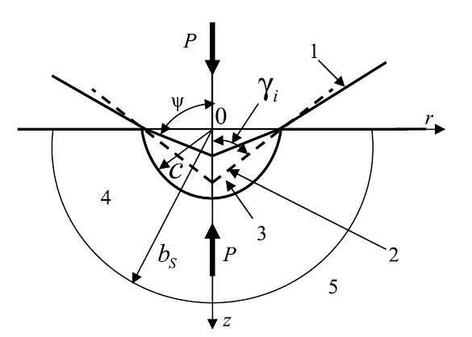

Galanov Model module¶
Galanov model¶
This code allows to compute elastic-plastic zone \(\frac{b_s}{c}\), the constrain factor \(C\) and ductility characteristic \(\delta_H\) by solving equations proposed by Galanov et al (Galanov, Ivanov, et Kartuzov, Improved Core Model of the Indentation for the Experimental Determination of Mechanical Properties of Elastic-Plastic Materials and Its Application.)
Model summary¶
Scheme of the interaction of a conical indenter and a sample under load P
{kind=link}
- We know:
\(E_S\) : elastic modulus of the sample
\(\nu_S\) : Poisson coefficient of the sample
\(E_i\) : elastic modulus of indenter
\(\nu_i\) : Poisson coefficient of indenter
\(H\) : hardness of the sample
\(\cot \gamma_i=\sqrt[4]{\frac{\pi^{2}}{27}} \cot \gamma_{B}\) with \(\gamma_{B}=65°\) for Brkovitch indenter
From:
We define:
and dimensionless unknowns
The system to solve is then:
were \(z\) is completely known. Moreover, \(C=\frac{1}{y}\)
- GalanovModel.Galanov_math_values(E_s, nu_s, E_i, nu_i, H_s)¶
Compute the known values in Galanov models from machanical properties of sample and indenter
- Parameters
E_s (float) – elastic modulus of sample
nu_s (float) – Poisson coefficient of sample
E_i (float) – elastic modulus of indenter
nu_i (float) – Poisson coefficient of indenter
H_s (float) – Hardness of the sample
- Returns
Ei_star
Ks
alpha_s
beta_s
cot_gamma_i,z
theta_s
- Return type
float
- GalanovModel.delta_H_value(E_s, H_s, nu_s, z)¶
Compute ductility characteristics
- Parameters
E_s (float) – elastic modulus of sample
nu_s (float) – Poisson coefficient of sample
H_s (float) – Hardness of the sample
z (float) – Galanov unknown
- Returns
delta_H the ductility characteristics
- Return type
float between 0 and 1
- GalanovModel.system_x_y(p, *args)¶
Solve Galanov sytem
- Parameters
p (tuple) – tuple of values of x and y
args (tuple) – contains alpha_s,beta_s,theta_s,z
- Returns
result of equation 1 and 2 with x and y values